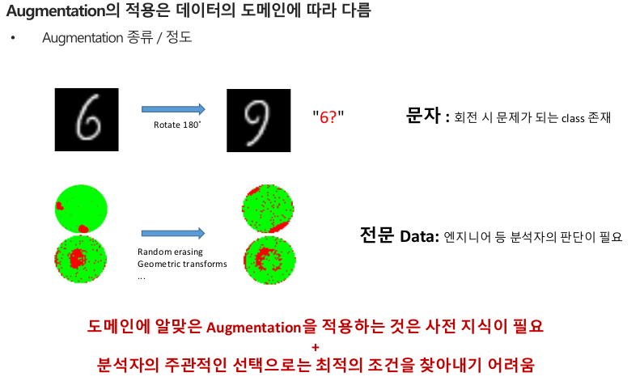

Augmentation의 한계점
데이터의 본질적 특징을 더 잘 포착하기 위한 변형

도메인별로 augmentation 전략이 달라짐

⚠
Label 보존 문제
변형으로 인해 label 의미가 바뀌면 학습이 왜곡됨 (예: 6 → 회전 → 9)
🧠
사전 지식 필요
적절한 변형 선택은 도메인 이해에 의존함
⚙
최적 조건 탐색
augmentation 강도와 종류를 찾기 어려움